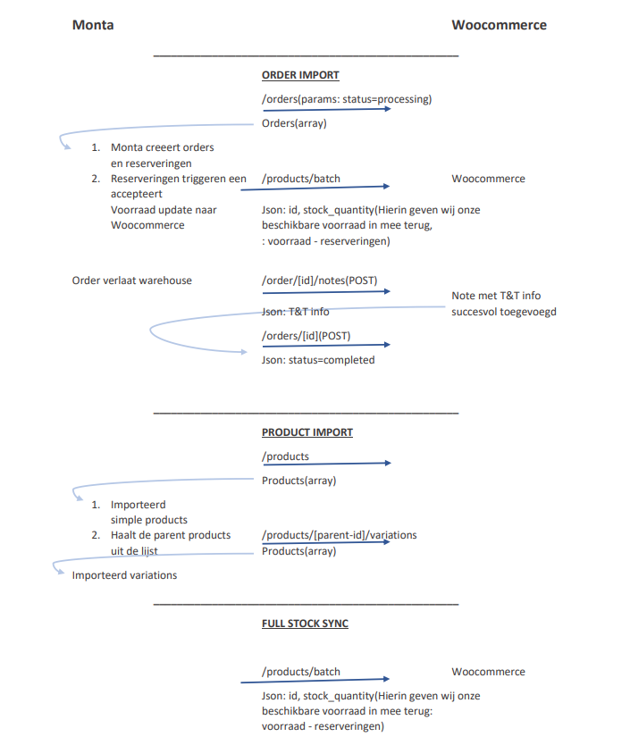

Woocommerce
Dataflows
- Refund Create (Letop: Dit onderdeel wordt niet standaard toegevoegd aan de koppeling)
- Full Stock Update
- Changed Stock Update
- Order Import
- Order Update
- Product Information Import (Vervangen door de Product match)
- Product Match (Incl. Product informatie import, EAN mapping benodigd)
- Changed Product Match (Letop: Dit onderdeel wordt niet standaard toegevoegd aan de koppeling)
Deze koppeling beschikt over dataflow instellingen. Meer informatie hierover is te vinden via Dataflow instellingen
[[Doelgroep: IT
Technische tekening Dataflows:

Instellingen:
Order Import:
Check on Products without SKU: Met deze instelling aan zal import orderregels zonder SKU overslaan
Check on virtual product: Normaal zal Monta altijd alle producten in de order importeren. Als Deze instelling aanstaat zal Monta tijdens het importeren van de orders controleren of een product is gemarkeerd als virtueel product. Als dat zo is dan zal Monta deze niet importeren.
OrderImportStatuses: Standaard halen we bij woocommerce orders met de status processing op.
Je kan per koppeling instellen via de kolom "OrderImportStatuses" in tabel "TypeOrderImportWooCommerceSettings" welke additionele statussen we binnen moeten halen.
Mogelijke statussen:
- 0 = processing
- 1 = on-hold
- 2 = pending
- 3 = completed
- 4 = failed
- 5 = cancelled
- 6 = refunded
DeliveryDateMetaKey= Standaard importeren we de gewenste leverdatum niet mee uit WooCommerce. Het is in Woocommerce mogelijk om een MetaKey aan te maken met deze datum erin. Door in deze instelling het veldnaam te plaatsen zullen we deze datum wel mee importeren met de order.
IgnoreOrderLineWhenMetaKeyContains = In Woocommerce heb je de mogelijkheid om aan een product een metaKey te handen. Door de metaKey bij deze instelling in te voeren zal dit product in de order niet worden geïmporteerd.
Shipper mapping:
Het is bij Monta mogelijk om de verzendopties van woocommerce naar de juiste verder bij monta te mappen. Dit is iets dat door Monta-IT moet worden ingericht.
Standaard importeert monta de method_id. Dit ID kan vervolgens naar de juiste vervoerder worden gemapt. Echter zit hier wel een uitzondering in. Wanneer de Method_ID: flexible_shipping_single of flate-rate bevat, dan zullen we de Method_Title uitlezen. Dit maakt het voor de klant mogelijk om meerdere verschillende Flat-Rate/ShippingRates te mappen.
Order update
HasShipmentTrackingPlugin: De notes zijn velden van de Woocommerce order. Standaard zet onze koppeling hier in de Track en Trace informatie. Wanneer de klant gebruik maakt van de shipment tracking plugin (zie 'ondersteunde plugins') heeft, dient deze instelling aangezet te worden zodat de tt-info in de plugin specifieke velden gezet kan worden.
Product Match
Barcode FieldName : Standaard is er in Woocommerce geen veld beschikbaar voor de Barcode. Daarom zal onze koppeling uit default de SKU van woocommerce importeren in de SKU en Barcode bij monta. Het is daarmee van belang dat de SKU gelijk is aan de Barcode van het artikel. Echter is er in Woocommerce wel de mogelijkheid om een extra veld aan te maken voor de Barcode. Door de naam van het veld in te voeren in deze instelling zullen we ipv de SKU te plaatsen, dit veld uitlezen en gebruiken als barcode.
- Barcode Atribuutnaam onbekend: Het is mogelijk om de attribuut naam op te zoeken via postman door een request te doen richting woocommerce. Dit kan je doen via het end-point: https://solow.nl/wp-json/wc/v3/products?consumer_key=[CustomerKey]8&consumer_secret=[customerSecret]. Vervolgens staat er in het atribuut "meta_data" de juiste naam.
Bijzonderheden
Plug-ins:
In WooCommerce is het mogelijk om plug-ins te gebruiken. Gezien deze apps open source zijn kunnen deze plugins ervoor zorgen dat de koppeling van Monta niet meer naar behoren werkt. Een aantal van deze plugins zijn ondertussen bekend bij Monta. Via Plug-in informatie is te vinden welke plug-ins Monta ondersteund.
Bedragen inclusief en Exclusief BTW:
Wanneer een order geimporteerd word uit WooCommerce worden de prijzen altijd geimporteerd inclusief BTW. Het kan mogelijk zijn dat dit niet juist is volgens de klant. In het geval dat er met refunds gewerkt gaat worden is het van belang dat wij de prijzen op een juiste manier importeren.
De klant zal er dan voor moeten kiezen om de prijzen op de volgende manier weer te geven zodat wij de prijzen met een juiste BTW importeren:
https://woocommerce.com/document/setting-up-taxes-in-woocommerce/